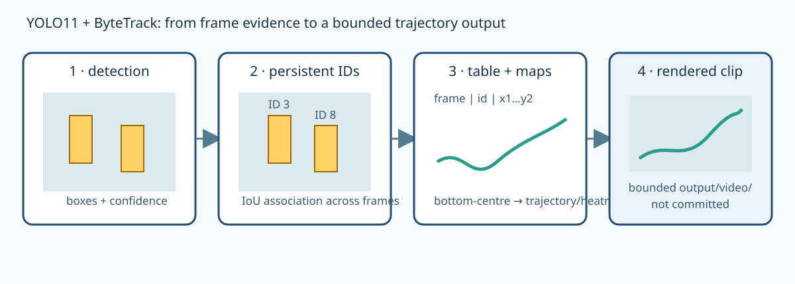
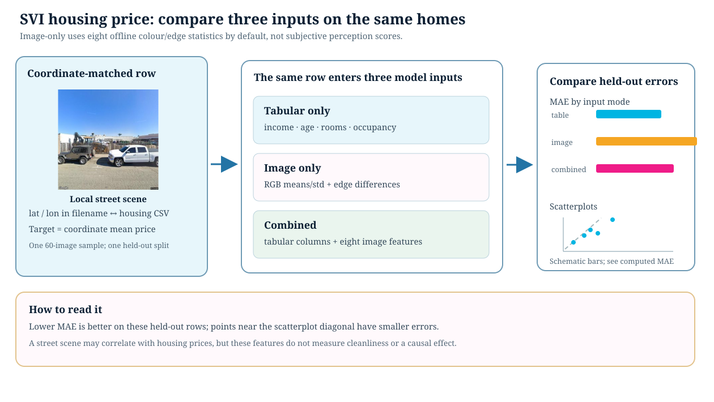

On this page
CV Models (Segmentation, Detection, Tracking)
Related API: ccai9012.yolo_utils · ccai9012.svi_utils
Overview
Category: Perception & Prediction from Visual Data
The module assumes basic Python, pandas, image/video handling, and the scikit-learn workflow from earlier Starter Kits. Both notebooks default to bounded local assets. Network acquisition and model downloads are explicit opt-in branches, so a fresh lesson run can first verify paths, joins, schemas, and output locations offline.
Modular Components:
- Image to perception
- Object detection and tracking with YOLO
- Semantic segmentation model
- Perception to measures
- Trajectory extraction
- Housing-price feature construction
- Measures to interpretation
- Frame, map, and trajectory visualisation
- Regression or spatial summary
Use Cases
- What factors influence walking behavior?
- How does visual cleanliness (graffiti, trash, lighting) relate to perceived safety?
- Can we predict CO2 emission using the SVIs?
Code Examples
Pedestrian Behavior Analysis in Public Spaces
Content: - Detect pedestrians using YOLO - Track boxes across frames using ByteTrack - Inspect track rows, trajectories, and sample heatmaps
Dataset:
- A short local video clip when available (video/closed_test_15.mp4 or
another user-provided clip)
- Optional external source: SkylineWebcams;
download and licensing must be checked by the user before placing a clip in
the local video/ directory
Required Packages: Ultralytics YOLO11, OpenCV, pandas, numpy, matplotlib, SciPy (for the optional rendered-video helper)
The notebook records one row per detected person per frame:
frame, persistent id, and bounding-box coordinates x1, y1, x2, y2.
Detection answers “what is in this frame”; tracking associates detections over
time. Confidence is the detector’s score, while IoU-based association and
ByteTrack determine whether an ID persists. Occlusion, camera motion, missed
detections, and a perspective-distorted bottom-centre point limit any direct
interpretation as pedestrian flow or walkability.
The expected model is the tracked yolo11m.pt file (YOLO11 medium). The
notebook loads it from the Starter Kit directory and stops with a helpful
message if it is absent; it does not silently replace it with a newer YOLO
generation. Video, CSV, heatmap, and rendered-clip outputs belong under the
ignored local output/ directory.

Frame-to-trajectory storyboard. Every downstream visualisation depends on the detection table.

Identify pedestrian location and generate footprint heatmap with tracking.
SVI-Based Housing Price Prediction
Content: - Use colour and edge statistics from local SVI images - Compare tabular, image, and combined regression features - Read held-out MAE without claiming a causal price effect
Datasets:
- Google Street View Imagery (SVI) from Google Map API
- Tracked California housing CSV in data/
Required Packages: OpenCV, scikit-learn, pandas, matplotlib, PyTorch
The default path uses a deterministic sample from the 151 tracked SVI images
and the matching California housing rows. Because the source CSV can contain
several rows at the same rounded coordinate, the notebook aggregates Target
to a coordinate-level mean before joining the image manifest. It then runs the
same held-out split and MAE metric for three columns: tabular-only, image-only,
and combined features. The offline image branch uses deterministic colour and
edge statistics; cached/approved ResNet weights are an explicit opt-in. A
Google Maps key is only requested when the acquisition flag is enabled.

Modality ablation with a shared manifest, target, split, and metric.
The result is a predictive comparison under this sampling and feature setup; it does not identify a causal visual-quality effect or a fair property-value assessment. Image filenames, coordinates, and targets must remain aligned at every step.

SVI-based housing price estimation. Nouriani, A., Lemke, L., 2022. Vision-based housing price estimation using interior, exterior & satellite images. Intelligent Systems with Applications 14, 200081. https://doi.org/10.1016/j.iswa.2022.200081.